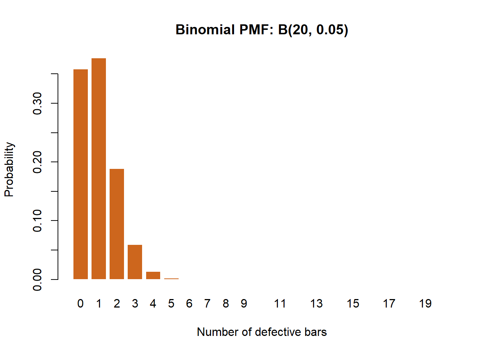
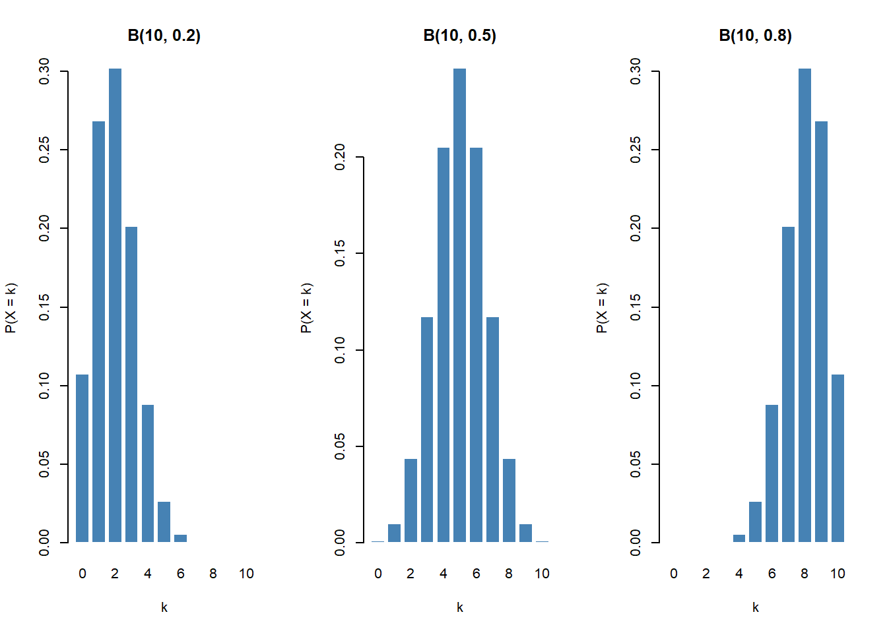
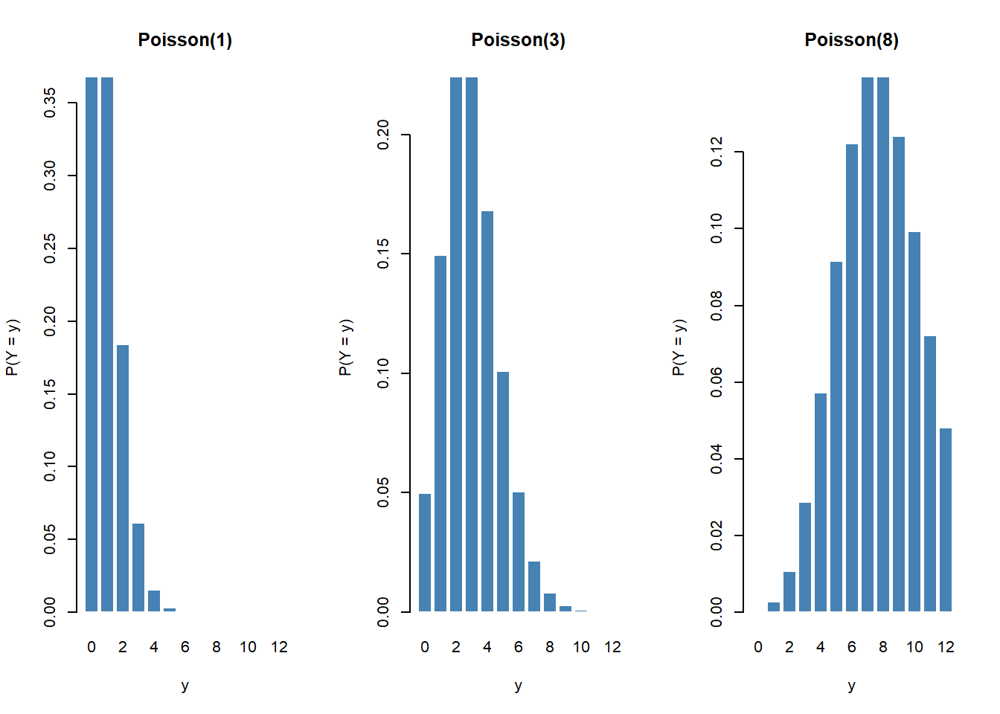
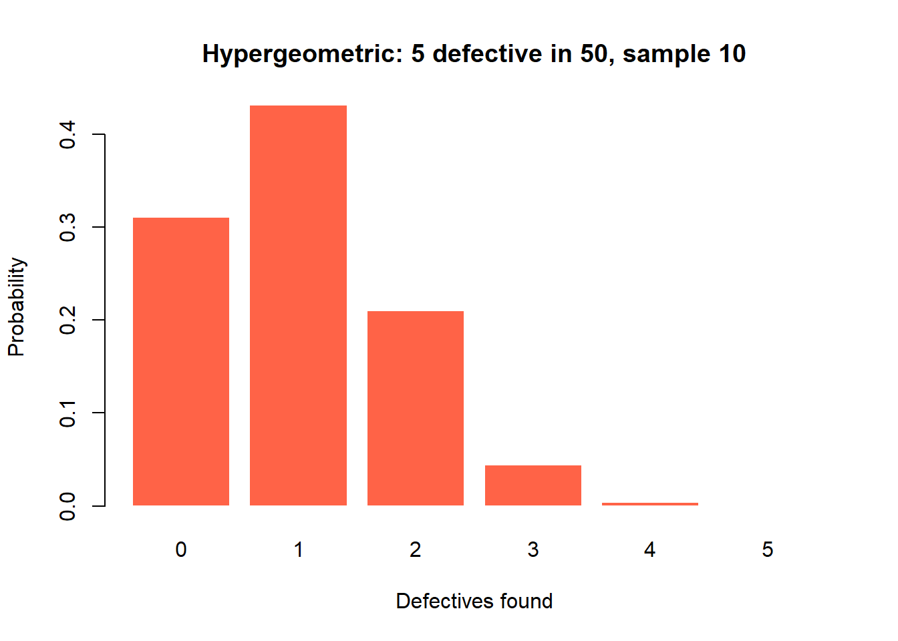
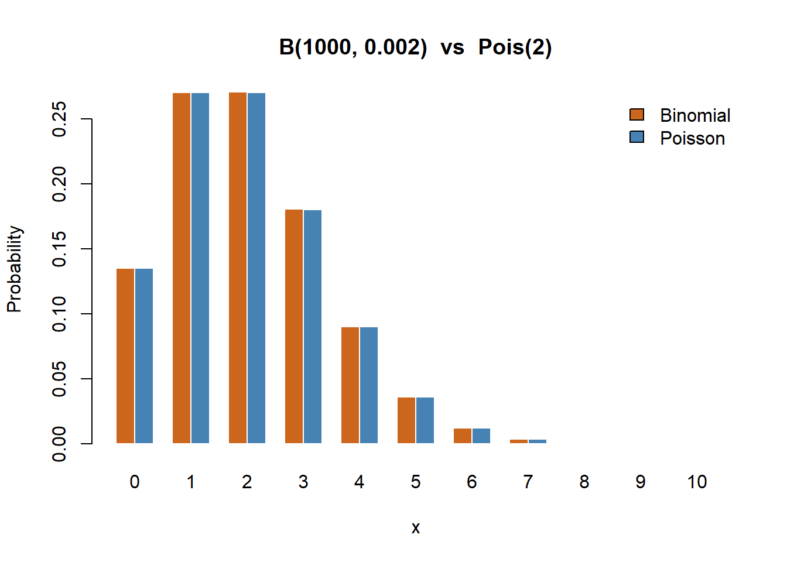

Code
set.seed(2026)Status: ported 2026-05-19. Reviewed by editor: pending.
By the end of this chapter the reader should be able to:
dbinom, pbinom, dpois, ppois, dhyper, phyper, dgeom, pgeom.Given a chocolate factory with a 5% defect rate, what is the chance that an inspector who samples 20 bars finds more than three defectives — and how does the answer change if the inspector instead waits to see the first defective, or counts complaints per shift?
These three questions illustrate the three counting frameworks at the heart of this chapter: counting successes in a fixed number of trials (binomial), counting trials until the first success (geometric), and counting events in a fixed interval (Poisson). In each case the underlying experiment is different, but the recipe is the same: identify the random mechanism, match it to a named distribution, then read off the formulas for mean, variance and tail probabilities.
The chapter follows the chocolate-factory running example through every section, then pivots to insurance, lotteries, server crashes and startup pitching in the worked examples and exercises.
In the previous topic we described a discrete random variable by listing every possible value together with its probability. That approach is general but exhausting: every new problem seems to require building a probability model from scratch. In practice a small number of patterns recur across economics, finance, quality control, epidemiology and marketing. Statisticians have given these recurring patterns names, and each named distribution comes with:
dbinom, dpois, dhyper, dgeom in R; BINOM.DIST in Excel; scipy.stats in Python).Identifying that a real situation follows a known distribution is one of the most valuable skills in applied statistics. Once you make that identification, you gain immediate access to all the formulas, tables and software tools associated with that distribution.
The distributions we study in this chapter are listed below. The discrete uniform appears only briefly; we treat the rest in full subsections.
| Distribution | Setup in one line |
|---|---|
| Discrete Uniform | All \(k\) outcomes equally likely. |
| Bernoulli\((p)\) | A single yes/no trial. |
| Binomial\((n, p)\) | Number of successes in \(n\) independent trials. |
| Hypergeometric\((N, K, n)\) | Successes when sampling without replacement. |
| Poisson\((\lambda)\) | Events occurring at a constant average rate. |
| Geometric\((p)\) | Number of failures before the first success. |
The negative binomial distribution (number of failures before the \(r\)-th success) generalises the geometric; we mention it briefly at the end.
A random variable \(X\) follows a discrete uniform distribution on \(\{1, 2, \ldots, k\}\) if each value is equally likely:
\[ p(x) = P(X = x) = \frac{1}{k}, \qquad x \in \{1, 2, \ldots, k\}. \]
We write \(X \sim \mathrm{DU}(k)\). Its mean and variance are
\[ \mu = \frac{k+1}{2}, \qquad \sigma^2 = \frac{k^2 - 1}{12}. \]
The canonical example is a fair \(k\)-sided die: for \(k = 6\), \(\mu = 3.5\) and \(\sigma^2 = 35/12 \approx 2.917\). We will not dwell on it; it is included only because it is the simplest possible discrete model.
Many situations involve a single trial with exactly two possible outcomes: a customer buys or does not buy, a product is defective or not, a loan defaults or does not. The Bernoulli distribution models this basic building block.
A random variable \(X\) follows a Bernoulli distribution with parameter \(p \in (0, 1)\) if it takes only two values: \(X = 1\) (“success”) with probability \(p\) and \(X = 0\) (“failure”) with probability \(1 - p\).
The PMF can be written compactly as
\[ p(x) = p^x (1 - p)^{1 - x}, \qquad x \in \{0, 1\}. \]
We write \(X \sim \mathrm{Bernoulli}(p)\). The mean and variance are
\[ \mu = \mathbb{E}[X] = p, \qquad \sigma^2 = \operatorname{Var}(X) = p(1 - p). \]
The variance \(p(1 - p)\) is maximised at \(p = 0.5\) (maximum uncertainty) and equals zero at \(p = 0\) or \(p = 1\) (certain outcome). The more balanced the two outcomes, the greater the variability.
Now suppose we repeat a Bernoulli experiment \(n\) times and count the total number of successes. If every trial is independent and the probability of success \(p\) remains the same on each trial, the count follows a binomial distribution.
A random variable \(X\) follows a binomial distribution with parameters \(n\) (number of trials) and \(p\) (success probability) if its PMF is given by the formula below for \(k = 0, 1, \ldots, n\). We write \(X \sim B(n, p)\).
\[ p(k) = P(X = k) = \binom{n}{k} p^k (1 - p)^{n - k}, \qquad k = 0, 1, \ldots, n, \]
where \(\binom{n}{k} = \dfrac{n!}{k!\,(n - k)!}\) is the binomial coefficient. It counts the number of ways to choose which \(k\) of the \(n\) trials are successes; the term \(p^k (1 - p)^{n - k}\) gives the probability of any one such sequence.
The mean and variance follow directly from writing \(X = X_1 + \cdots + X_n\) as a sum of \(n\) independent Bernoullis:
\[ \mu = np, \qquad \sigma^2 = np(1 - p). \]
The binomial model applies whenever all three of the following conditions hold:
If sampling is done without replacement from a finite population, the trials are not independent and \(p\) changes from trial to trial. The correct model is then the hypergeometric (Section 5.4). A common rule of thumb: if the sample is less than 5% of the population (\(n < 0.05 N\)), the binomial is an excellent approximation.
The shape of \(B(n, p)\) depends critically on \(p\). With \(n = 10\):
In general \(B(n, p)\) and \(B(n, 1 - p)\) are mirror images of each other.
A factory produces electronic components with a defect rate of 5%. An inspector randomly selects 20 components; let \(X\) be the number of defectives. Items are sampled from a large lot, so \(X \sim B(20, 0.05)\).
(a) \(P(X = 2)\). \[ P(X = 2) = \binom{20}{2}(0.05)^2 (0.95)^{18} = 190 \times 0.0025 \times 0.3972 = 0.1887. \]
(b) \(P(X \leq 1)\). \[ P(X = 0) = (0.95)^{20} = 0.3585, \quad P(X = 1) = 20 \times 0.05 \times (0.95)^{19} = 0.3774, \] so \(P(X \leq 1) = 0.7359\). About a 74% chance of at most one defective.
(c) Mean and standard deviation. \[ \mu = np = 1, \qquad \sigma = \sqrt{np(1 - p)} = \sqrt{0.95} \approx 0.9747. \]
An online retailer ships 50 orders per day; each is returned with probability \(p = 0.03\). Let \(X\) be the daily number of returns, so \(X \sim B(50, 0.03)\).
So even though the average is 1.5 returns, there is a 6.3% chance that the daily returns desk will be overwhelmed if it can only handle three.
The binomial assumes either sampling with replacement or sampling from a population so large that removing one item barely changes the probabilities. In many settings — inspecting a small lot, auditing a finite set of accounts, drawing cards — we sample without replacement. The hypergeometric handles this case.
A finite population of size \(N\) contains \(K\) “successes” and \(N - K\) “failures”. A sample of \(n\) items is drawn without replacement. Let \(X\) be the number of successes in the sample. We write \(X \sim \mathrm{Hyp}(N, K, n)\).
\[ p(k) = P(X = k) = \frac{\displaystyle \binom{K}{k}\binom{N - K}{n - k}}{\displaystyle \binom{N}{n}}, \qquad \max(0, n - N + K) \leq k \leq \min(n, K). \]
The mean and variance are
\[ \mu = n \cdot \frac{K}{N}, \qquad \sigma^2 = n \cdot \frac{K}{N} \cdot \frac{N - K}{N} \cdot \frac{N - n}{N - 1}. \]
The mean has the same form as the binomial mean \(np\) with \(p = K/N\). The variance includes the extra factor \(\frac{N - n}{N - 1}\), called the finite population correction (FPC), which is always less than 1 (for \(n > 1\)). Sampling without replacement reduces variability: as you draw items, you acquire information about the population.
As \(N \to \infty\) with \(K/N \to p\) fixed and \(n\) fixed, the hypergeometric converges to \(B(n, p)\). Practical rule: if \(n < 0.05 N\), use the binomial as an approximation.
A shipment of \(N = 20\) items contains \(K = 4\) defectives. An inspector draws \(n = 5\) items without replacement. The probability of finding exactly \(k = 2\) defectives is
\[ P(X = 2) = \frac{\binom{4}{2}\binom{16}{3}}{\binom{20}{5}} = \frac{6 \times 560}{15504} = 0.2167. \]
The expected number of defectives is \(\mu = 5 \times \frac{4}{20} = 1\), and the variance is \(5 \times 0.2 \times 0.8 \times \frac{15}{19} = 0.6316\).
In the Spanish Loter'ia Primitiva, a player picks 6 numbers from 1 to 49 and the draw produces 6 winning numbers. Let \(X\) be the number of matches between the player’s selection and the winning numbers, so \(X \sim \mathrm{Hyp}(49, 6, 6)\).
The Poisson distribution models the number of events that occur in a fixed interval of time, space, or other continuum, under the assumption that events occur independently and at a constant average rate.
A random variable \(X\) follows a Poisson distribution with parameter \(\lambda > 0\) if its PMF is the formula below for \(k = 0, 1, 2, \ldots\). We write \(X \sim \mathrm{Poisson}(\lambda)\).
\[ p(k) = P(X = k) = \frac{e^{-\lambda} \lambda^k}{k!}, \qquad k = 0, 1, 2, \ldots \]
The parameter \(\lambda\) is simultaneously the mean and the variance — an elegant and distinctive property:
\[ \mu = \lambda, \qquad \sigma^2 = \lambda. \]
This equidispersion property is the Poisson’s signature. Empirical count data that show variance much larger than the mean (“overdispersion”) signal that the Poisson is the wrong model — a common situation in applied work.
The Poisson applies when:
Typical applications include customers arriving at a bank per hour, typos per page, accidents per month at an intersection, emails per day, server crashes per year, and earthquakes of magnitude \(\geq 6.0\) per year in a region.
A call centre receives on average \(\lambda = 3\) calls per minute. Let \(X\) be the number of calls in a randomly selected minute, so \(X \sim \mathrm{Poisson}(3)\).
Scaling property. If \(X\) counts calls per minute with rate \(\lambda = 3\), then the number of calls in 2 minutes follows \(\mathrm{Poisson}(2 \times 3) = \mathrm{Poisson}(6)\). The rate is proportional to the length of the interval — one of the most useful features of the Poisson.
For small \(\lambda\) the Poisson is heavily right-skewed (most mass at 0 and 1); as \(\lambda\) grows the distribution becomes more symmetric and bell-shaped. For \(\lambda \geq 10\) it closely resembles a normal distribution — a manifestation of the Central Limit Theorem we will explore in a later course.
When the number of trials \(n\) is large and the success probability \(p\) is small, \(B(n, p)\) is well approximated by \(\mathrm{Poisson}(\lambda = np)\). This is both theoretically important and practically useful: computing \(\binom{n}{k}\) for large \(n\) can be tedious by hand.
If \(n \geq 30\) and \(p \leq 0.10\) (equivalently \(np \leq 10\)), then \(B(n, p) \approx \mathrm{Poisson}(np)\). The approximation improves as \(n\) increases and \(p\) decreases.
A large website receives 1000 visits per day. Each visit generates a complaint with probability \(p = 0.002\). Exact distribution: \(X \sim B(1000, 0.002)\). Approximation: \(\mathrm{Poisson}(\lambda = 2)\).
| \(k\) | \(B(1000, 0.002)\) | \(\mathrm{Poisson}(2)\) |
|---|---|---|
| 0 | 0.1353 | 0.1353 |
| 1 | 0.2707 | 0.2707 |
| 2 | 0.2709 | 0.2707 |
| 3 | 0.1806 | 0.1804 |
| 4 | 0.0902 | 0.0902 |
| 5 | 0.0361 | 0.0361 |
The two columns are virtually identical. The expected number of daily complaints is \(\lambda = 2\), with \(\sigma = \sqrt{2} \approx 1.41\).
The geometric models the number of failures before the first success in a sequence of independent Bernoulli trials.
Let independent Bernoulli trials be performed with success probability \(p \in (0, 1)\). Let \(X\) be the number of failures before the first success. We write \(X \sim \mathrm{Geom}(p)\).
\[ p(k) = P(X = k) = (1 - p)^k\, p, \qquad k = 0, 1, 2, \ldots \]
With \(q = 1 - p\), the mean and variance are
\[ \mu = \frac{q}{p} = \frac{1 - p}{p}, \qquad \sigma^2 = \frac{q}{p^2} = \frac{1 - p}{p^2}. \]
Some books count the trial number of the first success instead, \(Y = X + 1\), with \(P(Y = k) = (1 - p)^{k - 1} p\) for \(k = 1, 2, \ldots\) and \(\mathbb{E}[Y] = 1/p\). R’s dgeom uses the “failures before first success” convention (i.e., \(X\), starting at 0). Always check which one a source assumes.
The geometric distribution is the only discrete distribution with the memoryless property:
\[ P(X \geq s + t \mid X \geq t) = P(X \geq s), \qquad s, t \geq 0. \]
Past failures contain no information about the future: every trial is identical regardless of history. This is sometimes a useful normative reminder (“don’t get discouraged — each call is a fresh trial”) but also a strong modelling limitation. In reality, fatigue, learning effects, or selection on order (good leads called first) often make later trials behave differently.
A salesman has a 20% chance of making a sale at each house (\(p = 0.2\)); let \(X\) be the number of failures before the first sale. Then \(X \sim \mathrm{Geom}(0.2)\).
A founder pitches to venture-capital firms; each pitch has \(p = 0.08\) of receiving an offer. Let \(X\) be the number of rejections before the first offer, so \(X \sim \mathrm{Geom}(0.08)\).
By the memoryless property, the probability of being funded in the next 3 pitches given 8 prior rejections is still \(0.2213\) — the 8 rejections carry no information.
A natural generalisation of the geometric asks: how many failures occur before the \(r\)-th success?
Let independent Bernoulli trials be performed with success probability \(p\), and let \(X\) be the number of failures before the \(r\)-th success. We write \(X \sim \mathrm{NB}(r, p)\).
\[ p(k) = \binom{k + r - 1}{k} p^r (1 - p)^k, \qquad k = 0, 1, 2, \ldots \]
with mean \(\mu = r(1 - p)/p\) and variance \(\sigma^2 = r(1 - p)/p^2\). When \(r = 1\) this reduces to the geometric. Continuing the startup example, if three independent offers are needed for a full funding round, then \(X \sim \mathrm{NB}(3, 0.08)\) with \(\mathbb{E}[X] = 34.5\) rejections expected.
The most important applied skill in this chapter is recognising which distribution to use. The questions below — answered in order — work for every scenario in this course.
| Distribution | PMF | Mean \(\mu\) | Variance \(\sigma^2\) |
|---|---|---|---|
| Bernoulli\((p)\) | \(p^x (1 - p)^{1 - x}\) | \(p\) | \(p(1 - p)\) |
| Binomial\((n, p)\) | \(\binom{n}{k} p^k (1 - p)^{n - k}\) | \(np\) | \(np(1 - p)\) |
| Hyp\((N, K, n)\) | \(\dfrac{\binom{K}{k}\binom{N - K}{n - k}}{\binom{N}{n}}\) | \(n\dfrac{K}{N}\) | \(n\dfrac{K}{N}\dfrac{N - K}{N}\dfrac{N - n}{N - 1}\) |
| Poisson\((\lambda)\) | \(\dfrac{e^{-\lambda}\lambda^k}{k!}\) | \(\lambda\) | \(\lambda\) |
| Geom\((p)\) | \((1 - p)^k\, p\) | \(\dfrac{1 - p}{p}\) | \(\dfrac{1 - p}{p^2}\) |
The running theme of this lab is quality control at a chocolate factory. Each section introduces a distribution through a realistic scenario.
set.seed(2026)A chocolate factory has a 5% defect rate. An inspector samples 20 bars: \(X \sim B(20, 0.05)\).
n <- 20
p <- 0.05
# Point probabilities P(X = 0), P(X = 1), P(X = 2)
dbinom(0:2, size = n, prob = p)[1] 0.3584859 0.3773536 0.1886768# Cumulative P(X <= 2)
pbinom(2, size = n, prob = p)[1] 0.9245163# Upper tail P(X > 3) via complement
1 - pbinom(3, size = n, prob = p)[1] 0.01590153There is roughly a 92.5% chance that at most two bars are defective and under 2% chance of more than three defectives.
x_vals <- 0:n
probs <- dbinom(x_vals, size = n, prob = p)
barplot(probs, names.arg = x_vals, col = "chocolate3", border = "white",
main = "Binomial PMF: B(20, 0.05)",
xlab = "Number of defective bars", ylab = "Probability")
The distribution is heavily right-skewed because the defect rate is low.
mu_b <- n * p
sigma_b <- sqrt(n * p * (1 - p))
cat("E[X] =", mu_b, " SD[X] =", round(sigma_b, 3), "\n")E[X] = 1 SD[X] = 0.975 The shape of \(B(n, p)\) changes dramatically with \(p\). Side-by-side PMFs for \(n = 10\):
op <- par(mfrow = c(1, 3))
for (pp in c(0.2, 0.5, 0.8)) {
barplot(dbinom(0:10, size = 10, prob = pp),
names.arg = 0:10, col = "steelblue", border = "white",
main = paste0("B(10, ", pp, ")"),
xlab = "k", ylab = "P(X = k)")
}
par(op)Low \(p\) gives right-skew, \(p = 0.5\) is symmetric, high \(p\) gives left-skew.
The customer-service desk receives an average of 3 complaints per day: \(Y \sim \mathrm{Poisson}(3)\).
lambda <- 3
dpois(0:5, lambda) # P(Y = 0), ..., P(Y = 5)[1] 0.04978707 0.14936121 0.22404181 0.22404181 0.16803136 0.10081881ppois(5, lambda) # P(Y <= 5)[1] 0.9160821How the shape changes with \(\lambda\):
y_vals <- 0:12
op <- par(mfrow = c(1, 3))
for (lam in c(1, 3, 8)) {
barplot(dpois(y_vals, lam), names.arg = y_vals,
col = "steelblue", border = "white",
main = paste0("Poisson(", lam, ")"),
xlab = "y", ylab = "P(Y = y)")
}
par(op)For small \(\lambda\) the distribution is right-skewed; as \(\lambda\) grows it becomes nearly symmetric — an illustration of the CLT applied to count data.
Two scenarios.
# Loteria 6/49: 6 winning numbers among 49; you pick 6
# dhyper(x, m, n, k): m = successes in urn, n = failures, k = draws
dhyper(0:6, m = 6, n = 43, k = 6)[1] 4.359650e-01 4.130195e-01 1.323780e-01 1.765040e-02 9.686197e-04
[6] 1.844990e-05 7.151124e-08The jackpot probability is about \(7.15 \times 10^{-8}\) (the last entry above).
# Crate of 50 boxes, 5 defective; sample 10 without replacement
probs_h <- dhyper(0:5, m = 5, n = 45, k = 10)
names(probs_h) <- 0:5
round(probs_h, 4) 0 1 2 3 4 5
0.3106 0.4313 0.2098 0.0442 0.0040 0.0001 barplot(probs_h, col = "tomato", border = "white",
main = "Hypergeometric: 5 defective in 50, sample 10",
xlab = "Defectives found", ylab = "Probability")
A salesperson closes a deal with probability \(p = 0.20\) per visit. Let \(W\) be the number of failures before the first success: \(W \sim \mathrm{Geom}(0.20)\) in R’s convention.
p_sale <- 0.20
# First sale on the 4th visit => 3 failures then 1 success
dgeom(3, prob = p_sale)[1] 0.1024# P(need more than 5 visits) => P(W > 4)
1 - pgeom(4, prob = p_sale)[1] 0.32768Verify the memoryless property numerically:
s <- 3; t <- 2
cond <- (1 - pgeom(s + t, p_sale)) / (1 - pgeom(s, p_sale))
uncond <- 1 - pgeom(t, p_sale)
cat("P(W >", s + t, "| W >", s, ") =", round(cond, 4), "\n")P(W > 5 | W > 3 ) = 0.64 cat("P(W >", t, ") =", round(uncond, 4), "\n")P(W > 2 ) = 0.512 The two numbers are identical: past failures contain no information about the future.
Set \(n = 1000\), \(p = 0.002\), so \(\lambda = np = 2\).
n2 <- 1000
p2 <- 0.002
lam2 <- n2 * p2
x_range <- 0:10
binom_probs <- dbinom(x_range, size = n2, prob = p2)
pois_probs <- dpois(x_range, lambda = lam2)
barplot(rbind(binom_probs, pois_probs), beside = TRUE,
names.arg = x_range, col = c("chocolate3", "steelblue"),
border = "white",
main = "B(1000, 0.002) vs Pois(2)",
xlab = "x", ylab = "Probability")
legend("topright", legend = c("Binomial", "Poisson"),
fill = c("chocolate3", "steelblue"), bty = "n")
round(data.frame(x = x_range, Binomial = binom_probs,
Poisson = pois_probs,
Diff = binom_probs - pois_probs), 5) x Binomial Poisson Diff
1 0 0.13506 0.13534 -0.00027
2 1 0.27067 0.27067 0.00000
3 2 0.27094 0.27067 0.00027
4 3 0.18063 0.18045 0.00018
5 4 0.09022 0.09022 0.00000
6 5 0.03602 0.03609 -0.00007
7 6 0.01197 0.01203 -0.00006
8 7 0.00341 0.00344 -0.00003
9 8 0.00085 0.00086 -0.00001
10 9 0.00019 0.00019 0.00000
11 10 0.00004 0.00004 0.00000The maximum difference is on the order of \(10^{-4}\) — visually the two PMFs are indistinguishable.
\(X \sim B(n, p)\) counts the number of successes in \(n\) independent Bernoulli trials with constant probability \(p\). The PMF is:
Answer: A. Option B is the Poisson, C is the geometric, D is not a valid PMF.
If \(X \sim B(n, p)\), then \(\mathbb{E}[X]\) and \(\operatorname{Var}(X)\) equal:
Answer: A. B describes a single Bernoulli trial, not the sum of \(n\) of them.
In R, pbinom(2, size = 20, prob = 0.05) returns:
Answer: A. dbinom returns the point probability, pbinom the cumulative, qbinom the quantile.
The Poisson PMF with rate \(\lambda > 0\) is:
Answer: A. The Poisson has support on all non-negative integers; \(k!\) in the denominator is essential.
A defining feature of the Poisson distribution is:
Answer: A. Empirical data with variance much larger than the mean (“overdispersion”) signal that Poisson is the wrong model.
When \(n\) is large and \(p\) is small, \(B(n, p)\) is well approximated by:
Answer: A. The rate parameter is \(\lambda = np\); rules of thumb are \(n \geq 30\), \(p \leq 0.10\).
The hypergeometric distribution arises when:
Answer: A. Without replacement is the key signal. With replacement (or large \(N\)) leads to the binomial; counting in time leads to Poisson.
The geometric distribution has the memoryless property: \(P(W > s + t \mid W > s) = P(W > t)\). Intuitively this means:
Answer: A. This is sometimes a useful normative reminder, sometimes a strong modelling limitation when fatigue or learning effects matter.
A fair six-sided die is rolled once; let \(X\) be the number on the upper face.
\(P(X = k) = 1/6\) for \(k \in \{1, 2, 3, 4, 5, 6\}\).
\(P(X > 4) = P(X = 5) + P(X = 6) = 2/6 = 1/3 \approx 0.3333\).
\(\mathbb{E}[X] = (6 + 1)/2 = 3.5\); \(\operatorname{Var}(X) = (36 - 1)/12 = 35/12 \approx 2.917\).
A factory produces electronic components with a defect rate of 4%. A random sample of 15 components is selected; let \(X\) be the number of defective components.
\(X \sim B(n = 15, p = 0.04)\).
\(P(X = 2) = \binom{15}{2}(0.04)^2 (0.96)^{13} = 105 \times 0.0016 \times 0.5882 \approx 0.0988\).
\(P(X = 0) = (0.96)^{15} \approx 0.5421\); \(P(X = 1) = 15 \times 0.04 \times (0.96)^{14} \approx 0.3388\); so \(P(X \leq 1) \approx 0.8809\).
\(\mathbb{E}[X] = 0.60\); \(\operatorname{Var}(X) = 15 \times 0.04 \times 0.96 = 0.576\).
A hospital emergency room receives an average of 5 patients per hour.
\(X \sim \mathrm{Poisson}(\lambda = 5)\).
\(P(X = 3) = e^{-5} \cdot 5^3 / 3! \approx 0.1404\).
\(P(X \geq 2) = 1 - [e^{-5} + 5 e^{-5}] = 1 - 0.04043 \approx 0.9596\).
\(P(X = 0) = e^{-5} \approx 0.0067\) — only a 0.67% chance of a patient-free hour, consistent with a busy ER.
An online store has an 8% return rate. In a batch of 25 shipped orders, let \(X\) be the number of returns.
A company receives 500 emails per day, each spam with probability 0.2% independently. Let \(X\) be the daily number of spam emails.
A department has 15 expense reports, of which 5 contain irregularities. An auditor randomly selects 4 reports (without replacement).
A salesperson has a 15% probability of making a sale on each independent visit. Let \(X\) be the number of visits needed to make the first sale.
A pharmaceutical company produces batches of 200 tablets; 2% of tablets are under-dosed. An inspector samples 20 tablets from each batch.